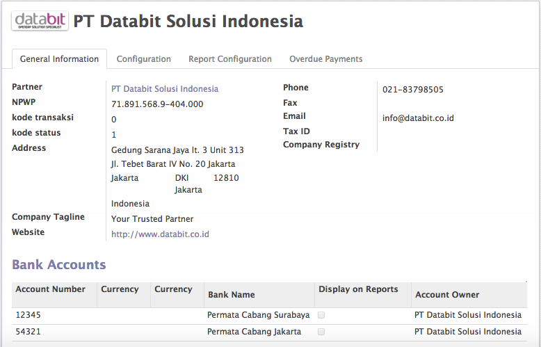

Odoo Setting¶
Odoo Setting ialah bagian pertama yang akan kita bahas dalam manual guide ini.
Mari kita Mulai
Company Setting¶
Catatan
Untuk Pelanggan Databit-Odoo On Demand, Company Setting akan dilakukan oleh Databit Team sesuai dengan data yang diterima
Untuk melakukan Company Setting dapat diakses melalui menu :
Menu Settings > Companies > Companies
maka akan muncul tampilan seperti ini
Keterangan :
1. Isi Nama Perusahaan dan masukan logo pada field image
2. Pada bagian General Information :
- isi Nomor NPWP
- kode transaksi (diisin dengan 0)
- kode status diisi dengan 1, jika merupakan perusahaan umum
- isi alamat perusahaan
- isi Company Tagline dengan motto perusahaan jika ada
- masukan informasi website perusahaan
- isi nomor telp, fax, dan email perusahaan
3. Pada Bagian Configuration
- isi Currency dengan Mata Uang Dasar Perusahaan dalam hal ini : IDR